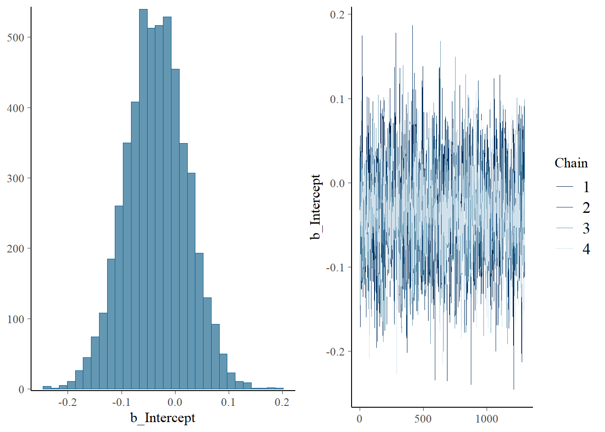
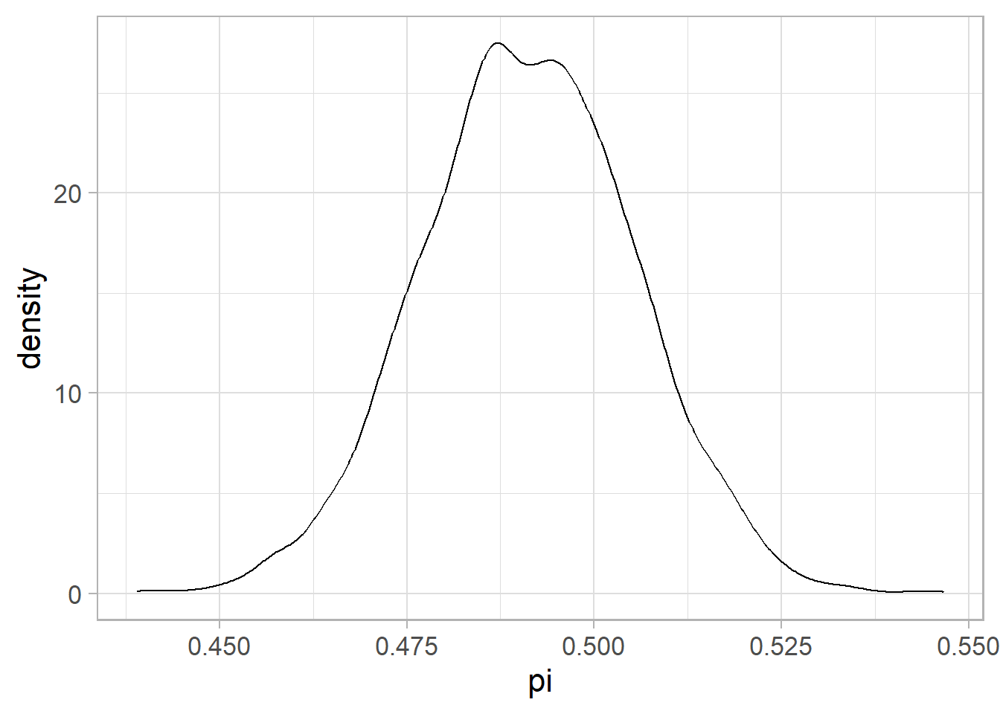
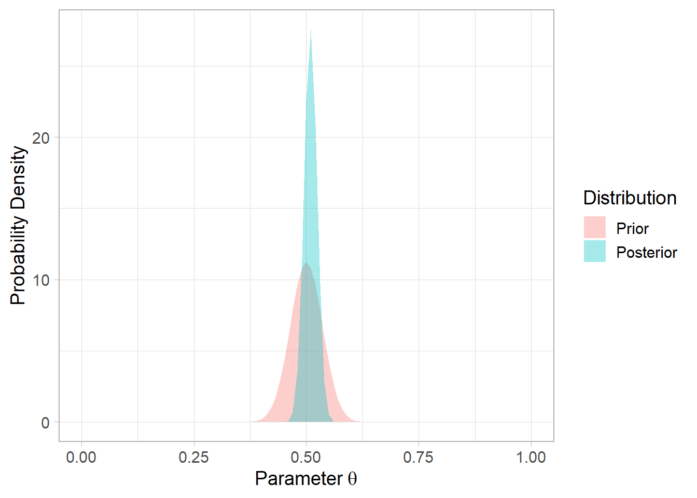
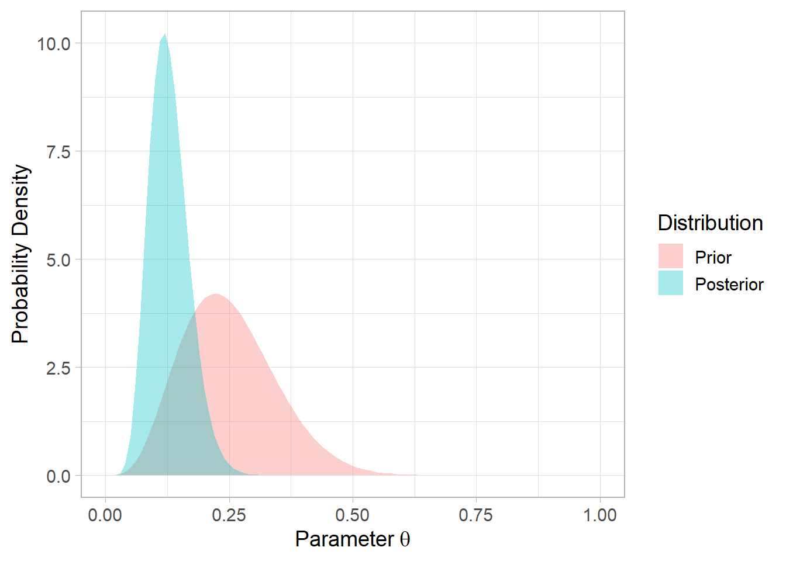
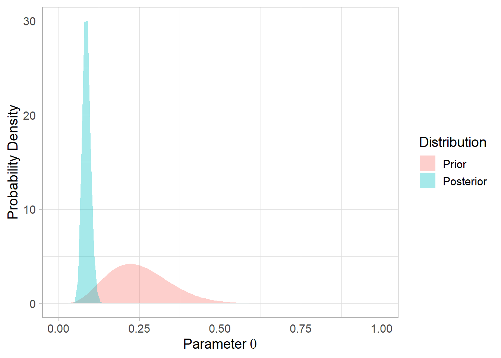
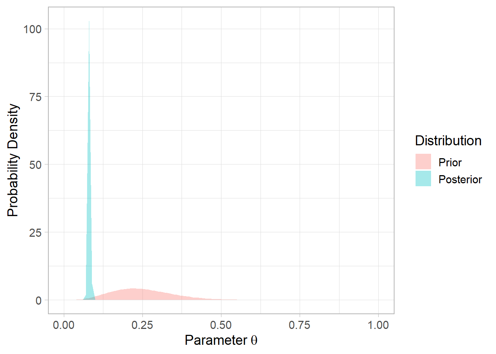
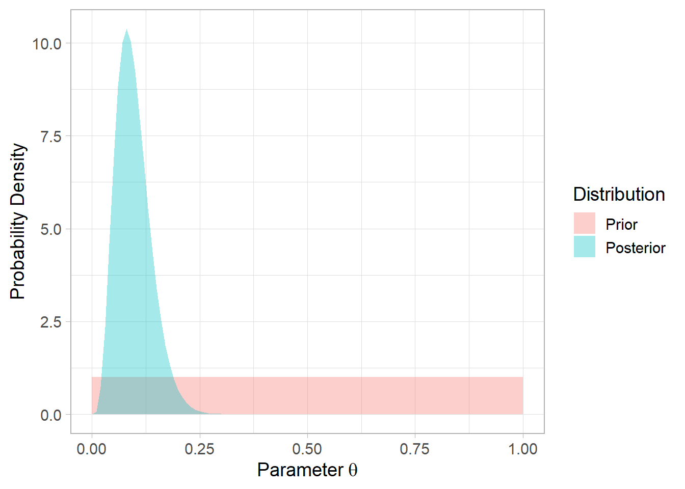
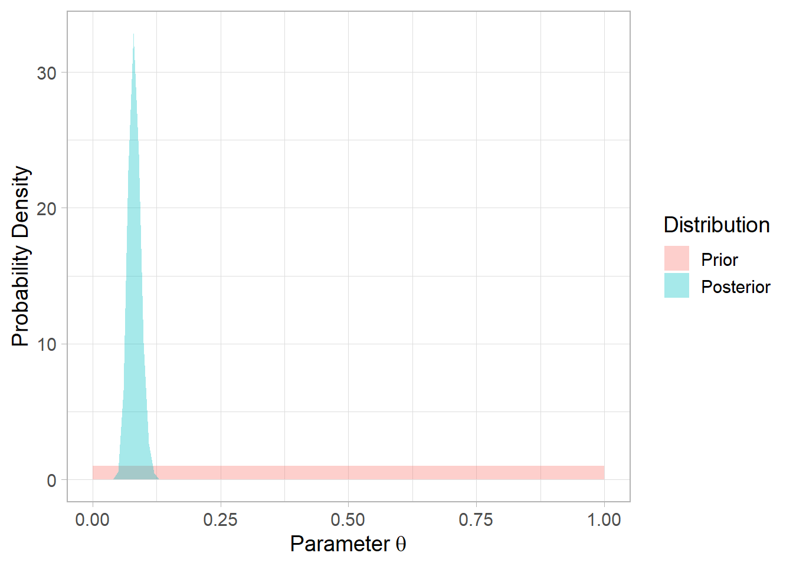
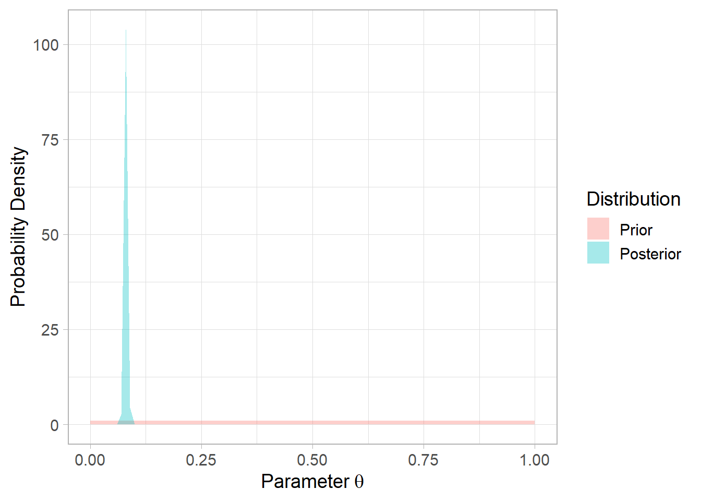

# libraries
library(ggplot2)
library(brms)
library(dplyr)
# Function to obtain the Posterior distribution for the Binomial-Beta Model
bayes_binomial <- function(successes, failures, prior_alpha, prior_beta){
# Parameter of the Posterior
aprime <- prior_alpha + successes
bprime <- prior_beta + failures
# Estimator for theta
schaetzer <- aprime / (aprime + bprime)
ci <- qbeta(c(0.025, 0.975), aprime, bprime)
# Plot
cols <- hcl(h = seq(15, 375
, length = 3)
, l = 65, c = 100)[1:2]
p <- ggplot(data.frame(x = 1), aes(x = x)) +
xlim(c(0, 1)) +
stat_function(fun = dbeta
, args = list(prior_alpha, prior_beta)
, geom = "area", alpha = 0.35, aes(fill = 'Prior')) +
stat_function(fun = dbeta
, args = list(aprime, bprime)
, geom = "area", alpha = 0.35, aes(fill = 'Posterior')) +
scale_fill_manual(name='Distribution',
breaks=c('Prior', 'Posterior'),
values=c('Prior' = cols[1], 'Posterior' = cols[2])) +
xlab(expression("Parameter" ~ theta)) +
ylab("Probability Density") +
theme_light(base_size = 14)
return(list("estimate" = schaetzer, "ci" = ci, "p" = p))
}Assignment1
Exercise 1
The French mathematician Pierre-Simon Laplace (1749-1827) was the first person to show definitively that the proportion of female births in the French population was less then 0.5, in the late 18th century, using a Bayesian analysis based on a uniform prior distribution.
Suppose you were doing a similar analysis but you had more definite prior beliefs about the ratio of male to female births. In particular, if \(θ\) represents the proportion of female births in a given population, you are willing to place a \(Beta(100, 100)\) prior distribution on \(θ\).
Show that this prior implies that you are more than 95% sure that \(θ\) is between 0.4 and 0.6, although you are ambivalent as to whether it is greater or less than 0.5.
pbeta(0.6, shape1 = 100, shape2 = 100) - pbeta(0.4, shape1 = 100, shape2 = 100)[1] 0.9956798Interpretation: I’m even more than 99% sure :)
Now you observe that out of a random sample of 1000 births, 511 are boys. Use brms to estimate the posterior distribution. What is your posterior probability that θ > 0.5?
###########################
### analytical solution ###
###########################
pbeta(0.5, shape1 = 100 + 489, shape2 = 100 + 511, lower.tail = FALSE)[1] 0.2626087#####################
### bmrs solution ###
#####################
# generate dataset
birth <- data.frame(female = c(rep(1, 489), rep(0, 511)))
# calculate prior mean and sd
mean_exact <- digamma(100) - digamma(100)
sd_exact <- sqrt(trigamma(100) + trigamma(100))
# estimate
file_path <- "brms_birth.rds"
if (file.exists(file_path)) {
fit <- readRDS(file_path)
} else {
set.seed(359)
fit <- brm(data = birth,
family = bernoulli(link = "logit"),
female ~ 0 + Intercept,
prior = c(prior(normal(0, 0.14),
coef = Intercept)),
iter = 2000,
warmup = 700)
saveRDS(fit, file = file_path)
}
fit Family: bernoulli
Links: mu = logit
Formula: female ~ 0 + Intercept
Data: birth (Number of observations: 1000)
Draws: 4 chains, each with iter = 2000; warmup = 700; thin = 1;
total post-warmup draws = 5200
Regression Coefficients:
Estimate Est.Error l-95% CI u-95% CI Rhat Bulk_ESS Tail_ESS
Intercept -0.04 0.06 -0.15 0.08 1.00 2164 2835
Draws were sampled using sampling(NUTS). For each parameter, Bulk_ESS
and Tail_ESS are effective sample size measures, and Rhat is the potential
scale reduction factor on split chains (at convergence, Rhat = 1).# visualize
plot(fit)
post <- as_draws_df(fit)
post %>%
mutate(pi = exp(b_Intercept) / (1 + exp(b_Intercept))) -> post
ggplot(post, aes(pi)) +
geom_density() +
theme_light(base_size = 16)
prior <-
bayes_binomial(successes = 511, failures = 489,
prior_alpha = 100, prior_beta = 100)
prior$estimate; prior$ci[1] 0.5091667[1] 0.4808841 0.5374203prior$p
# probability
mean(post$pi > 0.5)[1] 0.2696154Exercise 2
We all know that cilantro (coriander) is a delicious herb that should be added to virtually any meal. However, there seems to be a minority of voices on the internet claiming that cilantro tastes like soap. We want to investigate the prevalence of this claim.
Suppose we assume that about 25% of the broader (European) public are part of the tastes-like-soap population. Consequently, we pick a prior for the probability that any one person thinks cilantro tastes like soap, \(θ\), as \(θ ∼ Beta(5, 15)\).
Estimate the posterior distribution for three different samples:
• 4 out of 50 participants think cilantro tastes like soap
prior1 <-
bayes_binomial(successes = 4, failures = 50 - 4,
prior_alpha = 5, prior_beta = 15)
prior1$estimate; prior1$ci[1] 0.1285714[1] 0.0614171 0.2157325prior1$p
• 40 out of 500 participants think cilantro tastes like soap
prior2 <-
bayes_binomial(successes = 40, failures = 500 - 40,
prior_alpha = 5, prior_beta = 15)
prior2$estimate; prior2$ci[1] 0.08653846[1] 0.06394548 0.11214052prior2$p
• 400 out of 5000 participants think cilantro tastes like soap. Interpret the effect of sample size on the posterior.
prior3 <-
bayes_binomial(successes = 400, failures = 5000 - 400,
prior_alpha = 5, prior_beta = 15)
prior3$estimate; prior3$ci[1] 0.08067729[1] 0.07330416 0.08836685prior3$p
Interpretation: The increase of sample size has two functions. First, the confidence intervals are narrower, meaning that the estimation is more precise. Second, the estimate is closer to the sample proportion (80%), meaning that the data have more “weight” in causing belief update.
Compare your results from i. to the results if you choose a different prior, \(θ ∼ Beta(1, 1)\). Interpret the differences.
prior1 <-
bayes_binomial(successes = 4, failures = 50 - 4,
prior_alpha = 1, prior_beta = 1)
prior1$estimate; prior1$ci[1] 0.09615385[1] 0.03260649 0.18880601prior1$p
prior2 <-
bayes_binomial(successes = 40, failures = 500 - 40,
prior_alpha = 1, prior_beta = 1)
prior2$estimate; prior2$ci[1] 0.08167331[1] 0.05936542 0.10713441prior2$p
prior3 <-
bayes_binomial(successes = 400, failures = 5000 - 400,
prior_alpha = 1, prior_beta = 1)
prior3$estimate; prior3$ci[1] 0.08016793[1] 0.07280381 0.08785000prior3$p
Interpretation: First, less bias, even with fewer observations. Second, overall less information.
Bonus Exercise 3
Check out the example code in Intro_mcmc_sampling.R, which shows a Metropolis Hastings algorithm to estimate θ for a Binomial model with a Beta prior. Try to understand the code, and run the algorithm a few times with different settings for proposalSD.
Bonus Exercise 4
Here we apply Bayes rule for the case of discrete events. Suppose that 1 in 1000 people in a population is expected to get HIV. Suppose a test is administered on a suspected HIV case, where the test has a true positive rate (the proportion of positives that are actually HIV positive) of 95% and true negative rate (the proportion of negatives are actually HIV negative) 98%. Use Bayes theorem to find out the probability that a patient testing positive actually has HIV.
p_true <- 1 / 1000
p_true_positive <- 0.95
p_false_positive <- 1 - 0.98
(p_true * p_true_positive) / (p_true * p_true_positive + (1 - p_true) * p_false_positive)[1] 0.04538939Interpret: The probability that a patient testing positive actually has HIV is 4.5%.